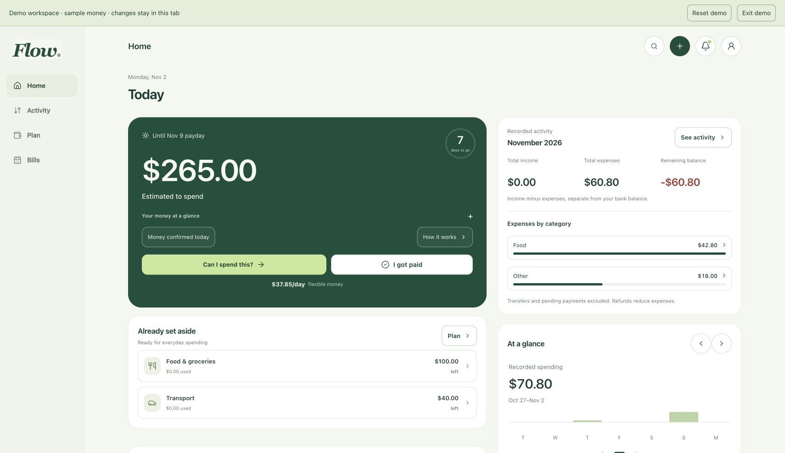

FLOW / PERSONAL APPLICATION
Connecting a bank was the part I was proudest of. Using Flow in everyday life gave me a reason to keep improving it.

FLOW / BUDGETING APPLICATION
Flow puts my transactions, budgets, bills, and payday planning in one place.
TRY THIS IN THE DEMO
Enter a sample amount and choose a category.
Find the transaction and see the recorded spending update.
See how much of its budget has been used and what remains.
THE PART THAT MATTERED TO ME
I wanted to connect a bank and use the app for my own life. Getting that connection working was a big milestone for me.
The private version connects through a bank provider and server functions. The public demo uses sample data, so you can try the interface without connecting a real account.
ONE IMPLEMENTATION DETAIL
Flow calculates money in whole cents. The category totals and recorded spending use the same calculation rules. Payday estimates are shown separately from past activity.
Read the money calculationsPersonal project. The public demo uses sample data; real-bank connections are part of a private pilot.